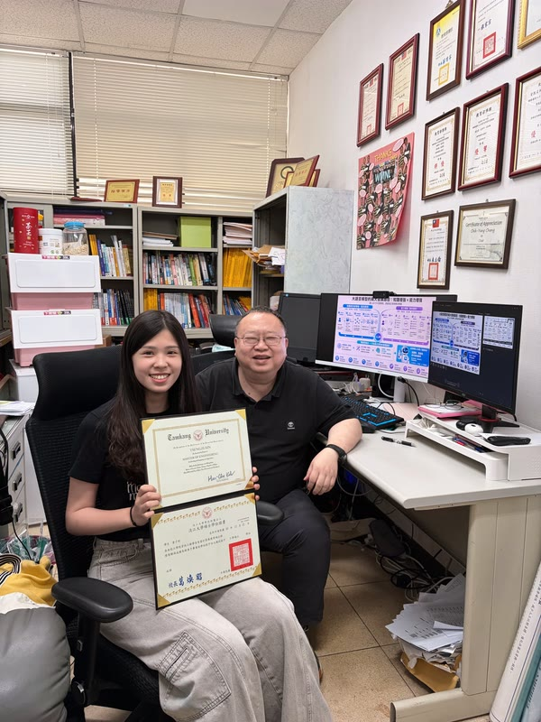
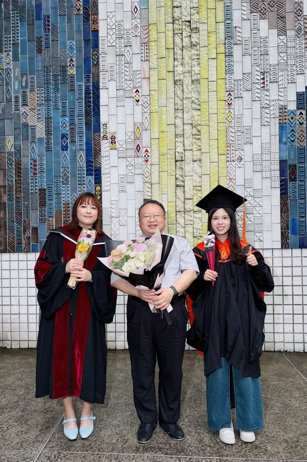
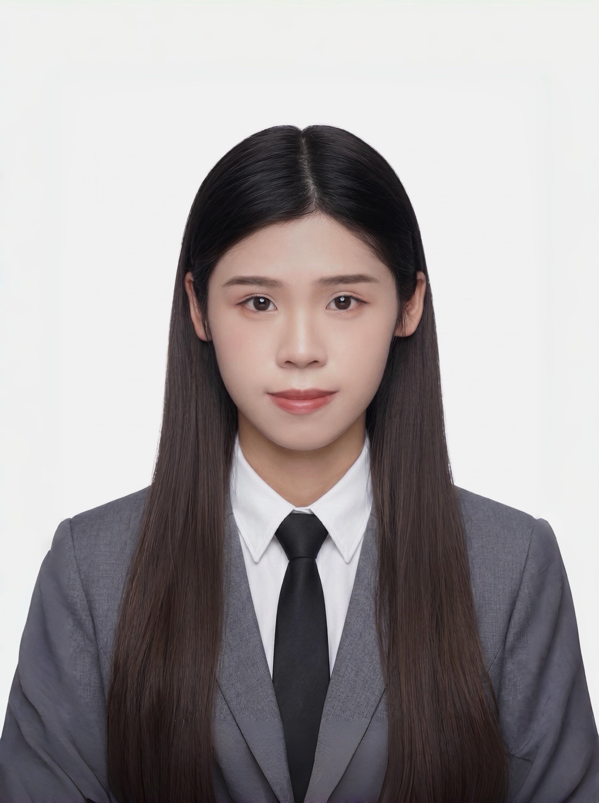
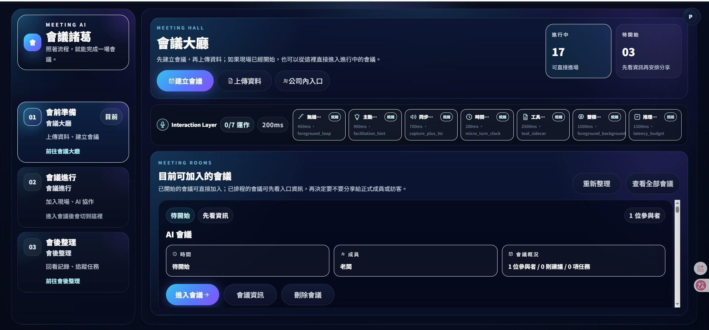
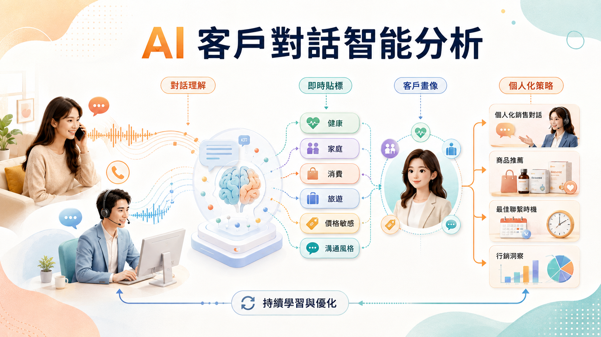
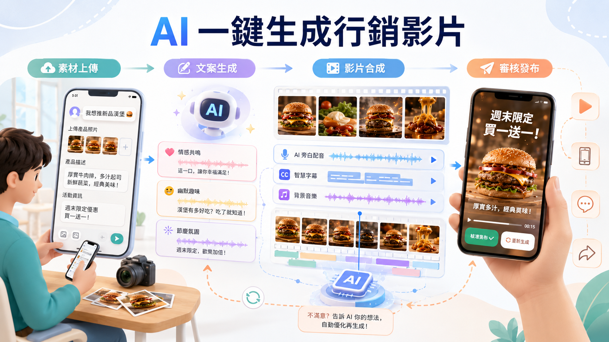
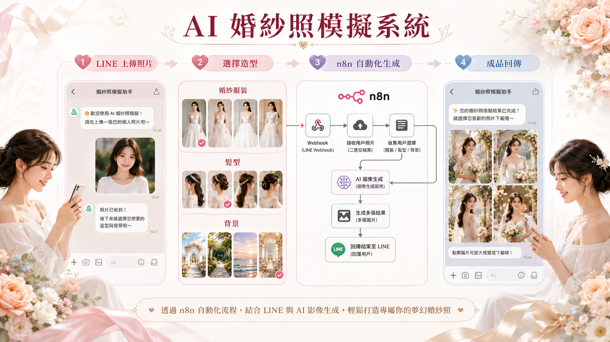

從使用者痛點、操作流程與成效指標出發，釐清 AI 系統應解決的核心問題。
Available for new opportunities
讓 AI 從概念
走進落地的產品與工作流程
我是曾子昕，具備資訊工程與管理跨域背景的 AI 應用與軟體開發者。從需求與使用者痛點出發，串連資料、模型與產品設計，打造可落地、可追蹤且能創造實際價值的 AI 解決方案。


MASTER'S
MILESTONE · 2026

01AI / SOFTWARE
PORTFOLIO
PORTFOLIO
TAIPEI, TW
SCROLL TO DISCOVER
2024—2026
01
PROFILE
從需求釐清到系統實作，
讓 AI 成為真正可用的解決方案。
我相信 AI 的價值不只來自模型表現，更在於能否回應真實需求並融入既有流程。碩士期間，我參與教育、零售與企業協作等專案，從需求釐清、資料處理與模型開發，到系統整合及成果驗證，累積將 AI 技術轉化為可操作、可追蹤解決方案的實作經驗。
查看我的專案 ↗應用 LLM、RAG、AI Agent、NLP、電腦視覺與預測模型，完成資料處理、模型開發及功能整合。
結合資料分析、儀表板與自動化工具，建置可追蹤、可維護且能持續優化的工作流程。
02
SELECTED WORK
從需求洞察到技術架構，
每一個專案都以可落地為原則。

產品介面 / 智慧會議工作台AIGO 淬煉實戰盃 · 2025 · 競賽佳作
諸葛｜讓每場會議
留下可執行的下一步
問題資料分散、會議重點難追溯、待辦容易遺漏。
系統整合會前知識、即時摘要與任務／決策辨識。
產出摘要、任務清單、風險提醒與管理儀表板。
01
產品展示影片 / 不含兒童個資
International ICT Awards · 2025 · 教育 AI 組第一名
AI 五力
智慧幼兒園
問題教師紀錄耗時，家長難即時理解孩子的成長。
系統將影像與日常紀錄轉為五力報表與自動化聯絡服務。
產出成長洞察、精華影片與親師溝通流程。
02

專案展示 / 客戶對話智能分析Industry Collaboration · 2025 · 概念提案
零售對話
智能分析
問題客服對話難累積洞察，話術高度依賴個人經驗。
系統以客戶畫像、語意貼標與策略話術形成閉環。
產出讓資料支持後續溝通與營運決策。
03

產品展示 / 一鍵生成行銷影片Curious Brothers · 2025 · Workflow Automation
一鍵生成
行銷影片
問題商家製作商品短影音費時，素材與活動文案難反覆整合。
系統以 LINE Bot 串接素材收集、文案／旁白、影片生成與確認流程。
產出可反覆修正、可追蹤進度的商家行銷影片工作流。
04

產品展示 / 婚宴故事影像Curious Brothers · 2025 · Generative Experience
婚宴故事影像
與婚紗照模擬
問題婚宴回憶素材零散，成長故事與客製化婚紗體驗難以整合。
系統以照片、文字敘事與風格選擇生成婚宴影片，並提供婚紗照模板模擬。
產出連貫的婚宴故事影片與可互動預覽的婚紗視覺體驗。
05
03
RECOGNITION
以實作驗證能力，
讓成果自己說話。
累積 8 項競賽獲獎成果，涵蓋教育 AI、生成式 AI、智慧應用與產學實作。
MULTIMODAL EDUCATION AI
AI 五力智慧幼兒園
教育 AI 組第一名・資訊應用組第二名・最佳人氣獎
以多模態 AI 分析幼兒的社交互動、學習專注與活動表現，協助教師與家長掌握成長歷程。
共累積 8 項競賽獲獎成果
04
EXPERIENCE & TOOLKIT
持續把知識
變成影響力。
2026.01
生成式 AI 工具實作協作助教
國立臺灣師範大學｜AI 融入學務工作研習協助學務人員實作 GPT、Gemini 與圖像、影片、短影音等生成式 AI 工具，將工具選擇連結到實際行政與學生服務情境。查看活動報導 ↗2025 — 2026
2025 — 2026
實務工作坊
醫療流程自動化工作坊協作講師
榮民總醫院合作帶領護理人員以 n8n 設計自動化流程，從日常工作痛點出發，探索減少重複行政作業與降低工作負荷的可行方案。2025 — 2026
資料分析課程助教
淡江大學協助機器學習、深度學習與生成式 AI 概念教學及實作。2024 — 2026
遠端課程助教
陽明交通大學半導體與 AI 在職培訓協助跨域、數據與應用班課程，涵蓋 Power BI、MySQL、BERT、VGG16 等主題。2024 — 2026
資訊工程學系碩士班
淡江大學大學主修淡江大學管理科學並輔系資訊工程系，碩士階段進一步就讀資訊工程學系，形成結合商業分析、使用者需求與 AI 系統開發的跨域背景。核心技術工具
程式開發Python・SQL・JavaScript
生成式 AI 與智慧代理LLM・RAG・AI Agent・Agentic Workflow・Tool Calling
人工智慧與模型NLP・Computer Vision・BERT・YOLO・XGBoost
資料處理與視覺化Pandas・MySQL・Power BI・Excel
系統整合與流程自動化n8n・Webhook・LINE API・Supabase
持續研究與實驗Agent Harness・MCP・Multi-Agent System・Context Engineering・Agent Evaluation
“
不只完成模型，更讓 AI 成為能融入真實流程的解決方案。
05 / GET IN TOUCH
下一個有影響力的
專案，從對話開始。
amyamy3821@gmail.com ↗© TSENG ZI-XIN
BACK TO TOP ↑